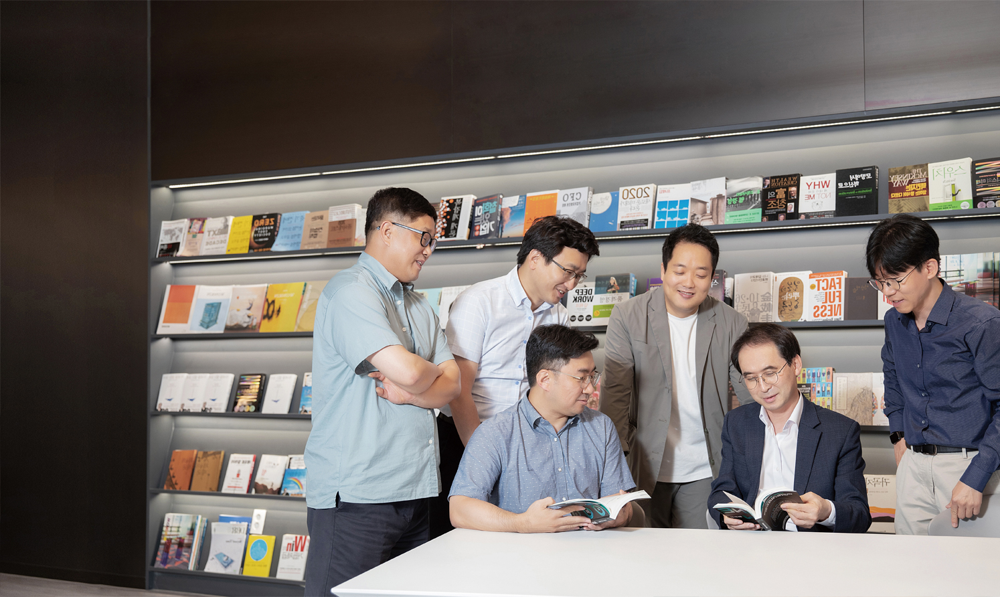

대화가 필요해
원익홀딩스 리더들
원익홀딩스 리더들
대화를 통한 리더십의 변화:
ONE ON ONE
한 취업포털 조사에 따르면
‘직장생활 스트레스받는다’라는
설문조사에 상사·동료와의
인간관계가 25.2%로 1위를
차지했다. 이러한 인간관계의
갈등은 어떻게 풀어야 할까?
<원온원> 저자 백종화는
‘소통(Communication)’이
아닌 ‘대화(Conversation)’가
답이라고 말한다.
2022 봄호 Vol.67

대화를 통한 리더십의 변화:
ONE ON ONE
한 취업포털 조사에 따르면
‘직장생활 스트레스받는다’라는
설문조사에 상사·동료와의
인간관계가 25.2%로 1위를
차지했다. 이러한 인간관계의
갈등은 어떻게 풀어야 할까?
<원온원> 저자 백종화는
‘소통(Communication)’이
아닌 ‘대화(Conversation)’가
답이라고 말한다.
나는 어떤 리더로 기억되고 싶은가?
원익홀딩스는 지난 1분기 책 <두려움 없는 조직>을 선정하여 북토크 세션을 진행했고, 목표에 몰입한 구성원이 자유롭게 자신의 의견을 개진하고, 진취적인 도전을 이어나갈 수 있게 하는 ‘심리적 안정감’을 어떻게 조직 내에 확보할 것인가에 대해 서로의 생각과 처한 상황을 공유했다. 북토크 세션을 통해 확인한 리더들의 생각과 상황을 요약하면 ‘심리적 안정감을 확보하기 위해서는 구성원과의 관계 개선이 필요하며, 이전과는 다른 사고방식과 경험을 가진 세대와의 신뢰 형성 방법에 대해 경험이 부족하다’는 것이었다. 이에 6월 29일, 2분기 북토크 세션에서는 ‘대화를 통한 리더십의 변화: One on One’을 주제로 진행했다. <원온원> 저자인 백종화 코치의 인사말로 강의는 시작됐다. “안녕하세요. 백종화입니다. 제가 그동안 원온원 미팅을 진행해왔는데, 시간을 따지만 5,000시간은 넘을 거예요. 다만 원온원 미팅은 모든 상황에 있어 정답은 아니라고 말씀드리고 싶어요. 상황마다 다르고, 업종마다 다를뿐더러 사람마다 다르기 때문이죠. 다만, 기억해주셨으면 하는 것은 원온원 미팅이 구성원과의 관계를 개선할 수 있는 하나의 방법이 될 수 있고, 분명한 목적을 가지고 진정성 있는 원온원 미팅을 하다 보면 스킬은 그냥 따라오는 것으로 생각해요. 그래서 저는 이번 세션에서 우선 리더분들이 ‘나는 어떤 리더로 기억되고 싶은가?’를 생각하면서 참여했으면 합니다. 리더들의 행동과 말에 진정성이 있어야 구성원들에게 영향을 줄 수 있기 때문이죠.”
나를 중요한 존재로 여겨주는 리더
워크숍으로 ‘나에게 적용할 구체적인 방법 5가 지’를 찾도록 했다. 이를 위해서 ‘나의 관점을 공 유하기’ 시간을 가지며 서로의 실행 아이디어를 만들었다. 한 조는 ‘현 조직원들과 주기적인 대화 의 기회 마련’과 ‘원온원 대화 방법을 가족과 친 구에세 적용 시험’, ‘구성원의 생각을 끝까지 경 청, 내 생각을 강요하지 않기’ 등을 꼽았으며, ‘구 성원과의 원온원을 통한 카운셀러 되기’, ‘협업 팀장과의 신뢰관계 구축하기’ 등을 적어내기도 했다. 그다음 ‘어떤 리더로 기억되고 싶은가’에 대한 주 제를 다루기 위해 백종화 코치는 역으로 “어떤 선배가 기억에 남느냐”를 물었고, 리더들은 저마 다 자신들의 선배에 대해 이야기를 꺼내기 시작 했다. 여러 관점에서 다양한 선배 리더들의 모습 이 거론되었지만 결국 기억 속에서는 긍정적인 기억으로 남고 닮고 싶은 리더의 모습을 정리하 자 리더의 모습이 ‘나를 중요한 존재로 여겨주는 리더’ 한 문장으로 표현됐다. 이어서 백종화 코치 는 ‘함께 일하는 구성원에 대해 얼마나 알고 있는 가’에 대해 몇 가지 질문을 던졌다.
여가 시간에 하는 것, 현재의 고민, 전 직장에서의 경험, 성장의 방향, 강점과 약점, 현재 진행되는 업무의 어려움 등에 대해 구체적으로 적어 보라는 백종화 코치의 요구에 많은 리더들의 탄식 소리가 들렸다. ‘구성원을 알고 있다’라고 생각만 했지, 실제로는 그렇게 구 체적으로 알고 있지 않았던 것이었다. 이에 대해 백종화 코치는 상대방을 중요한 존재로 여긴다는 것은 상대방에 대해 얼마나 알고 있는가가 관건이라고 말하며, 상 대방을 깊이 알기 위해서는 자기 자신도 그에 상응한 개방감을 상대방에 전달해야 한다고 강조했다. 이때 적용해 볼 수 있는 것 이 조셉 러프트(Joseph Luft)와 해리 잉햄(Harry Ingham)이라는 두 심리학자가 개발한 ‘조해리의 창’으로 우리 내면에 4가지 영역을 통해 나와 구성원의 공개 영역, 무의식 영역 등을 늘려가라고 조언했다. 또한, 리더십 콘셉트의 변화가 필요하다고 강조하며, ‘CEO’는 임원의 팀장이다’라는 메시지를 던졌다. 전략 수립과 의사결정, 대내외 활동 등 경영에 큰 영향을 미치는 활동만이 CEO의 역할이 아니라는 얘기다. CEO가 임원의 팀장으로서 임원과 원온원 을 해야 임원이 아래 팀장과 원온원하고, 그래야만 팀장이 구성원을 원온원 할 수 있다는 것이다.
진정성 있는 태도와 대화가 필요함을 깨달았습니다.
김채빈 대표답을 정하지 않는 것, 원온원의 시작
그렇다면 원온원은 그저 두 사람이 만나 길게 대화를 이어나가면 될까? 진정성 있는 원온원을 하기 위해서는 우선 상대방과 나 사이에 심리적 안정을 만드는 것이 매우 중요하다. 이는 생각과 의견을 명확히 전달하는 ‘소통(Communication)’이 아닌 서로 다른 의견을 알아가는 ‘대화(Conversation)’를 하고 있음을 계속 신경 써야 한다는 것이다. 달리 표현하면 상대방과의 대화 속 에서 ‘방법’이나 ‘답’을 찾고자 하면 안 된다는 것이다. 상대방의 어떤 생각과 의견도 받아줄 수 있는 상태가 유지되어야 비로서 원온원이 시작되며 구성이 주도권을 가지고 현재의 이슈와 문제를 두려움 없이 공유하고 리더와 함께 대안을 찾아나갈 수 있 게 된다. 이 상태가 되어야 원온원이 강력한 경영의 도구이자 리더십 장면이 될 수 있다고 백종화 코치는 말했다. 강의 말미에 원익홀딩스 김채빈 대표는 “상대방에 대한 이해가 수반되지 않은 관계는 모래 위에 성을 쌓는 거라는 걸 다시 한 번 깨달았습니다. 지금까지 상대방 중심으로 생각하고 소통한다고 했지만 결론은 이미 마음속에 정해진 나의 생각, 경험을 강 요하지 않았나 돌아보겠되었습니다”라고 강의 소감을 밝히기도 했다.
팀원 Say
현재의 SKH고객지원팀의 근간을 만들고 조직 체계를 완성하셨습니다. SK하이닉스 진입 초기, 아무것도 갖추어지지 않은 환경 속에서 신규 고객에 대한 고객지원 체계를 만들고 조직원들의 역량을 향상 시켜 어려운 대외환경 속에서도 고객 만족을 실현하는 SKH고객지원팀을 만드신 일등공신이었습니다.문기호님
팀원 Say
현재의 SKH고객지원팀의 근간을 만들고 조직 체계를 완성하셨습니다. SK하이닉스 진입 초기, 아무것도 갖추어지지 않은 환경 속에서 신규 고객에 대한 고객지원 체계를 만들고 조직원들의 역량을 향상 시켜 어려운 대외환경 속에서도 고객 만족을 실현하는 SKH고객지원팀을 만드신 일등공신이었습니다.문기호님
팀원 Say
현재의 SKH고객지원팀의 근간을 만들고 조직 체계를 완성하셨습니다. SK하이닉스 진입 초기, 아무것도 갖추어지지 않은 환경 속에서 신규 고객에 대한 고객지원 체계를 만들고 조직원들의 역량을 향상 시켜 어려운 대외환경 속에서도 고객 만족을 실현하는 SKH고객지원팀을 만드신 일등공신이었습니다.문기호님
팀원 Say
현재의 SKH고객지원팀의 근간을 만들고 조직 체계를 완성하셨습니다. SK하이닉스 진입 초기, 아무것도 갖추어지지 않은 환경 속에서 신규 고객에 대한 고객지원 체계를 만들고 조직원들의 역량을 향상 시켜 어려운 대외환경 속에서도 고객 만족을 실현하는 SKH고객지원팀을 만드신 일등공신이었습니다.문기호님